All successful API programs allow many different API clients to consume their APIs. It is extremely important to identify who is calling. In Apigee, APIs are published in the form of products and consumed by applications.
What you'll learn
- How to identify who's calling the API
- How to configure a product for our API
- How to create an application to consume the API
What you'll need
- Your proxy created in the previous lab
Use case
You want your API to be consumed by many different clients and you want to identify who is calling the API.
Download a working solution to the previous lab as a proxy bundle ZIP file:
Prerequisites:
- Target Server: TS-Retail (instructions in lab 2)
Find your spec ID. When you open your spec in the spec editor, the link will be in this format, with the spec ID at the end of the URL:
https://apigee.com/organizations/YOURORG/specs/folder/FOLDERID/editor/YOURSPECID
Navigate to your proxy and upload the bundle as a new revision:

Select the association.json resource. Replace YOURORG and YOURSPECID with the values from the spec URL.

Once updated, the association.json should look something like this:
{
"url": "/organizations/apigeek-eval/specs/doc/207966/content"
}
Click Save to save your proxy. Open the Deployment menu, and check the deployment status. Click on test to deploy this revision of the proxy.

Test will be green when it is deployed.

- Add a VerifyAPIKey policy to your proxy
- Create a Product with your proxy
- Create a Developer
- Create an Application
- Test your API with the newly created API key
Whenever we save changes to a proxy, it will overwrite the current revision. To make sure we can go back to our previous version if we want to, let's save as a new revision.

Then we'll need to deploy this version to test. Click the Deployment menu, and then select the test environment. It will be green when the selected revision is deployed.

Go back into our API proxy.
Select the default Proxy Endpoint and click on PreFlow.
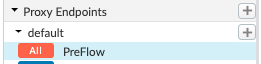
You should see the graphic representation of its policies (empty for now):
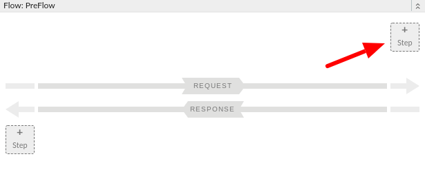
To add a policy to the Request PreFlow, click on the "+ Step" button on the upper right corner of the flow view. You will be presented with a list of available policies to be added to the flow:
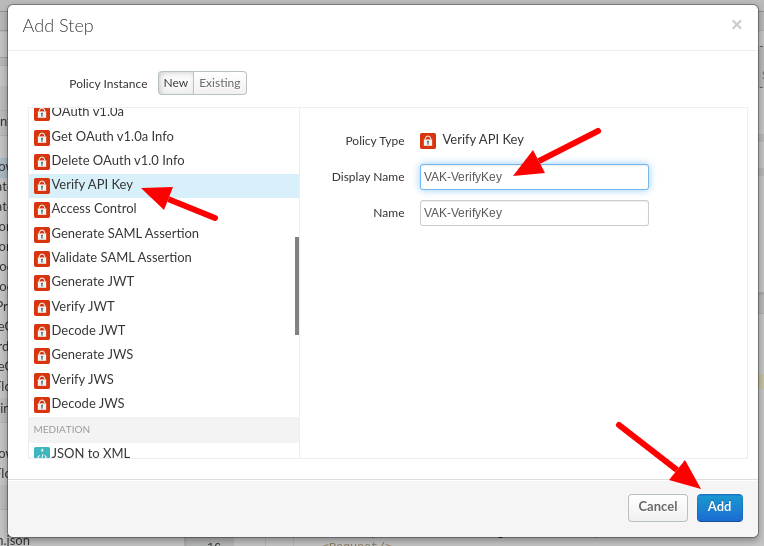
Select "Verify API Key".
Change the Display Name to:
VAK-VerifyKey
The name will automatically be set when changing the display name. Click on Add.
Next, we need to configure the policy to take the API key as a parameter from a custom header.
We'll be using the header name:
apikeyClick on the policy and you should see the current configuration:
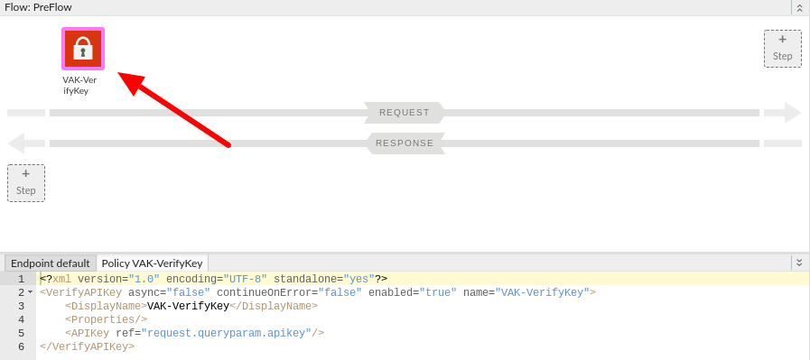
By default, the policy comes configured to look for the key in a query parameter. For this lab it should be enough, given that this is not a production application. But why leave it as is when the best practice is to never place sensitive data, such as an API key, in the URL?
In order to receive the key in a header we need to modify the <APIKey> element to the following:
<APIKey ref="request.header.apikey"/>Make sure you save your proxy and that you have deployed the correct revision.
Switch to the trace tab and let's verify we are receiving the key in the right location.
If you simply invoke the API from the trace itself, you should be receiving a 401 as response.
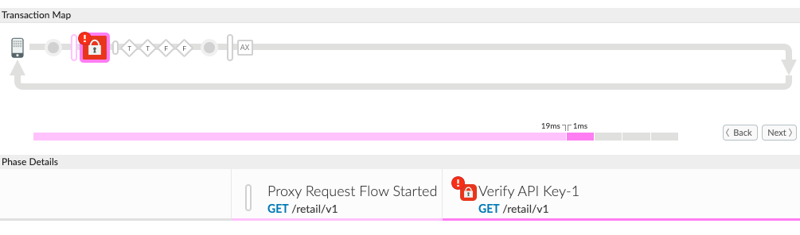
We cannot add headers from the trace tool.
We can invoke the API from elsewhere while still tracing the proxy using the trace tool. For the purpose of this lab, I'll be showing how to do it from the Apigee's REST client tool available at: https://apigee-restclient.appspot.com/, but you can use Postman, cURL, or other tools if you want.
For now, just to validate our policy configuration, let's set the header apikey to something like ‘test123':
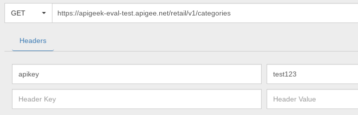
When you invoke the API you should still be getting a 401, but this time it should say that the key is invalid.
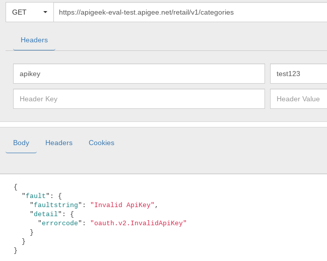
As long as you can see the value passed in the trace, we are OK to continue.
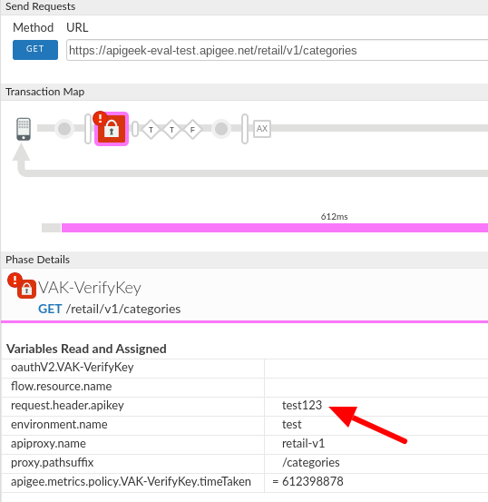
In order to create a key we can use for the API, we'll first need to create a product.
We'll switch to the Publish section in the UI and then select API Products.
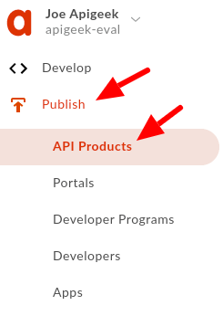
If you have a brand new org, you won't see much here; otherwise you'll see a list of products already created.
Look for the ‘+ API Product' button on the upper right corner and click on it.
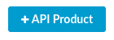
This will bring you to a new popup screen where you'll enter the details about the product being created as well as which APIs should be part of this product.
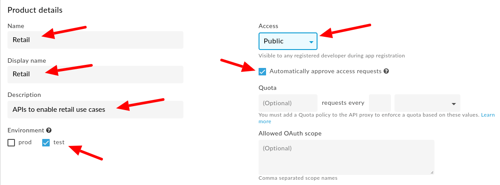
Fill in the following information (make sure you leave the ‘Automatically approve...' option checked).
Name | Retail |
Display Name | Retail |
Description | APIs to enable retail use cases |
Access | Public |
Environment | test |
Move down to the API Resources area and look for the API Proxies field and click the link for ‘Add a proxy'
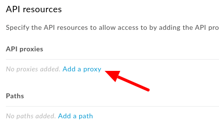
We'll be adding the complete proxy, select it from the list and click on ‘Add (1)'
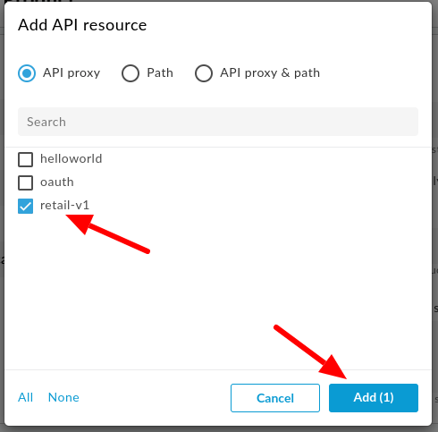
It'll bring you back to the previous screen. You should see that adding this API product allows access to /retail/v1/ paths.
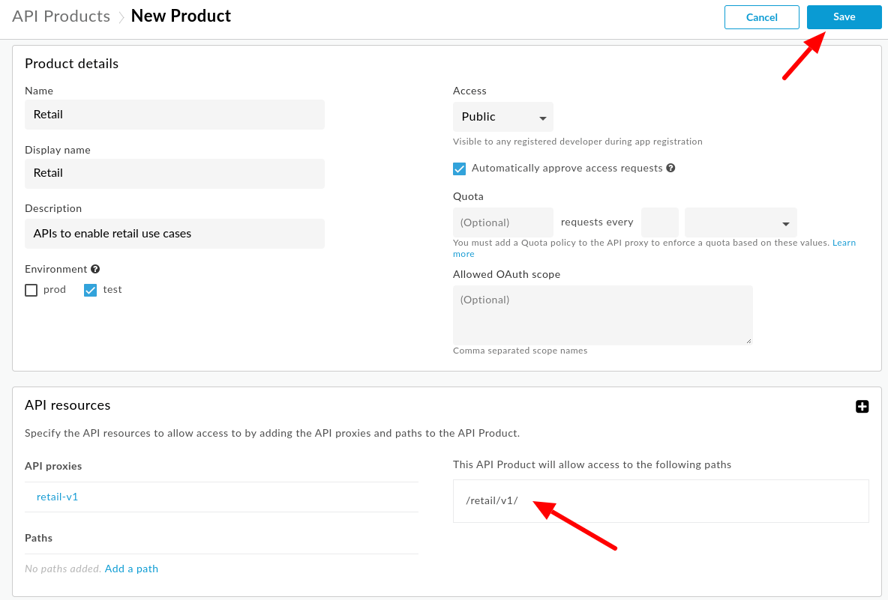
Click on ‘Save' on the upper right corner.
When you go back to the API Products list, you should now see your newly created product. We can now create a developer application to use it.
Developers are usually created via the Developer Portal, but we don't have one created yet. Instead we'll add a developer using the management UI.
Under the Publish menu, select Developers:
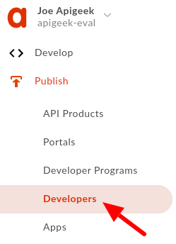
Click on the ‘+ Developer' button on the upper right corner.
It will then present you a simple form to enter the developers data:
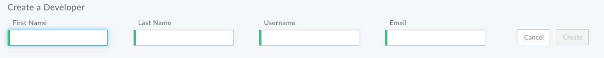
Enter the details (choose any values) and click ‘Create'. The button will be enabled once you fill in the details.
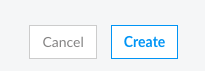
The creation of an Application is very much similar to the one for a Developer or Product. In his case, we just need to enter basic information about the application being created and select which products will be used.
In this lab, we'll be adding only the product that we just created.
From the ‘Publish' menu, select ‘Apps'
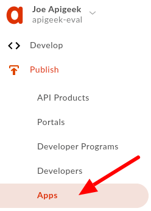
Then, click on the ‘+ App' on the upper right corner.
This will bring you to the App Details screen.
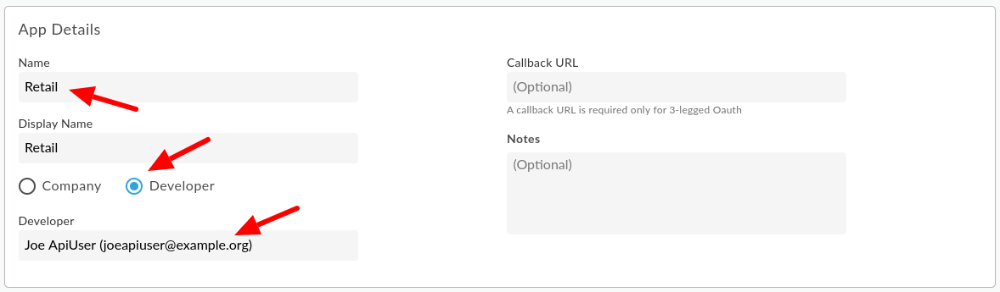
Enter the App name and select your developer. These are the only required details..
Move down to the Credentials session. This is where we select the products, by clicking on the ‘Add product' button.
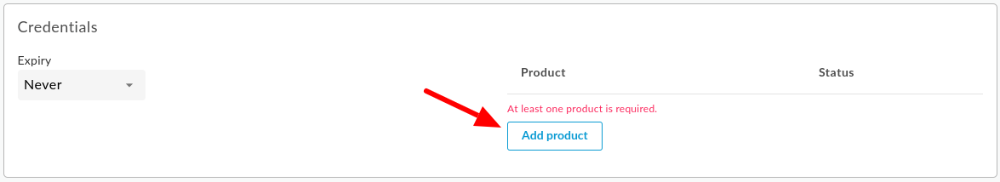
Select your product and click on Add. This will bring you back and you should see it listed as Approved.
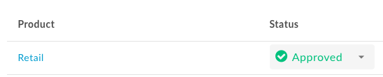
Click on ‘Create' at the top.
Under credentials you should now be able to see the Key and Secret created for your app.
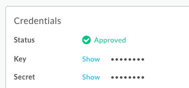
Click on ‘Show' to see the data.
Make sure you copy the Key string and use it in the next step to test the API.
Testing will be done the exact same way as before. Just make sure to use the correct API Key from your application and make sure you are still adding ‘/categories' to the URL.
Use the REST client tool to make the requests and pass the key in the apikey header.
You should receive a 200 OK.
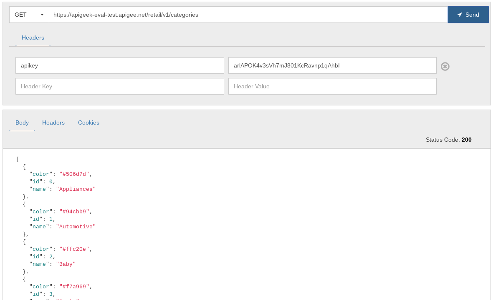
If you test it with a trace session running, you should now be able to also inspect several variables that get populated as a result of successfully identifying the application invoking the API, by selecting the Verify API Key policy in the trace.
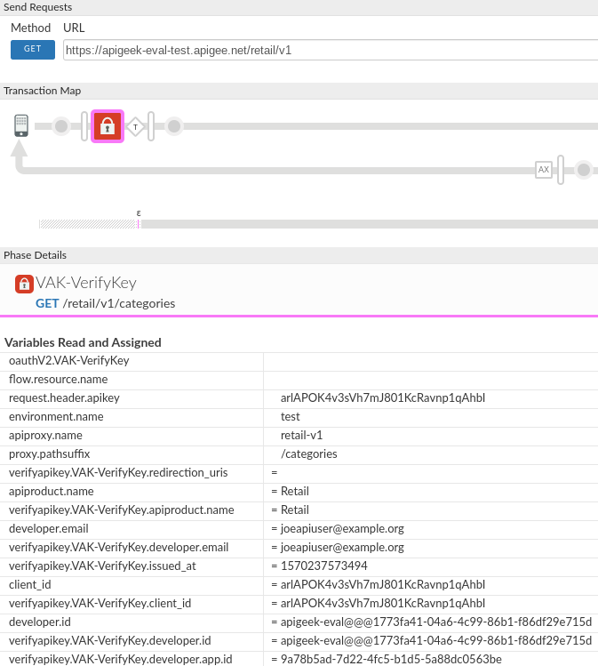
You have created a product, developer, and app, and used the app credentials to successfully call your proxy.